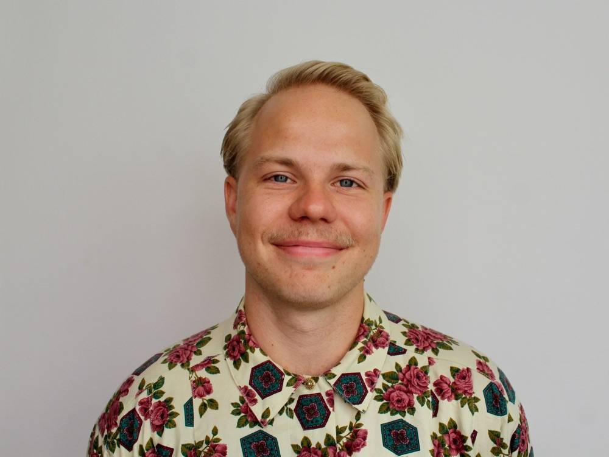

Psykoterapi över videosamtal
Ivan
Wahlund
Nästan alla hamnar någon gång i en livssituation de har svårt att hantera. Ibland räcker de egna resurserna, men ibland behövs stöd för att navigera vidare och växa som människa. Kognitiv beteendeterapi har starkt forskningsstöd och är hjälpsam även vid livskriser, ensamhetskänslor, relationsproblem och sviktande självkänsla. Jag erbjuder terapi online, utan väntetider eller rigida ramar.
Leg. psykolog · Online via videosamtal · Svenska & engelska

- Format
- Videosamtal, 60 min
- Pris
- 1 000 kr Första samtalet gratis
- Svarstid
- Tidsförslag inom 24 timmar
- Språk
- Svenska och engelska
Om mig
Jag är legitimerad psykolog som har gått psykologprogrammet på Karolinska Institutet och jag har arbetat både på BUP och inom specialistpsykiatrin för vuxna. Utöver mitt kliniska arbete har jag även jobbat på LSS-boende och med psykologisk forskning på KI. De huvudprinciper som alltid har präglat mina psykologiska behandlingar är värme, målmedvetenhet och forskningsbaserade komponenter. Det är min bestämda uppfattning att terapi som innehåller dessa delar kan hjälpa alla som önskar uppnå meningsfull förändring.
Mitt terapeutiska hantverk är inte fäst vid en specifik mall, utan skräddarsys efter ditt behov. Jag tar hänsyn till olika delar som påverkar ditt mående och tillsammans formulerar vi en karta som kan förklara din situation och kan bana väg för terapeutisk förändring.
Så går det till
-
1
Kostnadsfritt inledande samtal
Ett kort videosamtal där vi går igenom vad du söker hjälp med och om vi passar för varandra.
-
2
Kartläggning
1–2 samtal, inklusive det inledande samtalet, ägnas åt att förstå din situation och sätta ett gemensamt mål för arbetet.
-
3
Regelbundna samtal
Vi har en kontinuerlig terapikontakt som oftast är veckovis men som också kan anpassas efter dina önskemål och behov.
Vad jag kan hjälpa till med
I vårt möte tar jag hänsyn till dina behov och anpassar terapin efter din situation. Oavsett om du har en diagnos eller inte får du hos mig hjälp att växa som människa. Terapi hos mig passar dig som:
- Fastnar återkommande i negativa tankemönster
- Vill ha konkreta verktyg för att hantera livets utmaningar
- Söker stöd under en svår period eller livshändelse
- Vill förstå dig själv bättre och utvecklas som person
- Depression och nedstämdhet
- Alla typer av ångestbesvär
- Sorg
- Stressrelaterad ohälsa
- Tvångssyndrom
- Perfektionism
- Negativ självbild
- Specifika fobier
- Minoritetsstress
- Krishantering
- Sömnproblem
- Ilska och aggression
- Prokrastinering
- Neuropsykiatriska diagnoser som ADHD och autism
Legitimerad psykolog — vad innebär det?
Psykolog är en skyddad yrkestitel som endast får användas av den som har psykologlegitimation.
Som legitimerad psykolog arbetar jag under professionellt yrkesansvar och står under Socialstyrelsens tillsyn. Det innebär bland annat tystnadsplikt och journalföring enligt patientdatalagen.
- Skyddad yrkestitel som kräver legitimation från Socialstyrelsen
- Tystnadsplikt och journalföring enligt patientdatalagen
- Anmäld hos IVO:s vårdgivarregister
Vanliga frågor
Ingår besöken i högkostnadsskyddet?
Nej. Det här är en privat mottagning utanför regionens vårdval, så besöken omfattas inte av högkostnadsskyddet.
Vad händer om jag behöver avboka?
Avbokning senast 24 timmar före bokad tid är kostnadsfri. Vid senare avbokning eller uteblivet besök debiteras hela avgiften.
Är samtalen konfidentiella?
Ja. All information hanteras enligt gällande sekretesslagstiftning och patientdatalagen.
Terapi ska kännas trygg och begriplig från första samtalet: tydligt syfte, tydlig riktning, och utrymme att säga ifrån om något inte fungerar.
Boka tid direkt via bokningssystemet, eller skicka en kort beskrivning av vad du söker hjälp med så återkommer jag inom två arbetsdagar.
Boka tid